四个湖北家庭的除夕夜 | 棱镜
原文链接 备份链接 作者 | 王晓 出品 | 棱镜·腾讯小满工作室 欢迎下载腾讯新闻APP，阅读更多优质资讯 对于湖北人民来说，2020年的这个除夕夜太不平常了。 “药店大姐告诉我们，口罩绝不涨价，不发国难财，而且告知我们第二天早7点开 …

本视频为今年的年三十，武汉父母与身在外地的孩子
隔空互送新年祝福
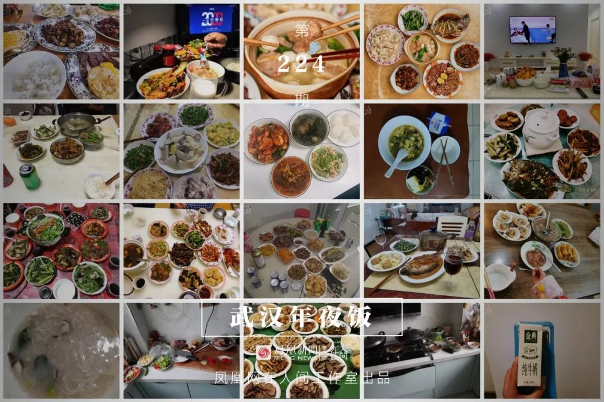
年夜饭，是中国人最看重的家庭宴会。1月24日，武汉封城第二天，年三十，有23个武汉人给我们分享了他们的年夜饭。

@王启明：
今天是武汉封城的第二天，也是大年三十。全家做完每日例行的消毒工作以后，就开始筹备年夜饭。ML和母亲各自做了三道菜，年夜饭算不上丰盛.，但很有武汉特色：菜苔、藕夹、藕汤……吃饭的过程中大家都有一些沉重。我问父母：“春晚还看吗？”父亲说：“还是看吧，不能总看负面新闻啊……得看点儿积极一点儿、开心的东西，不然精神会崩不住的……
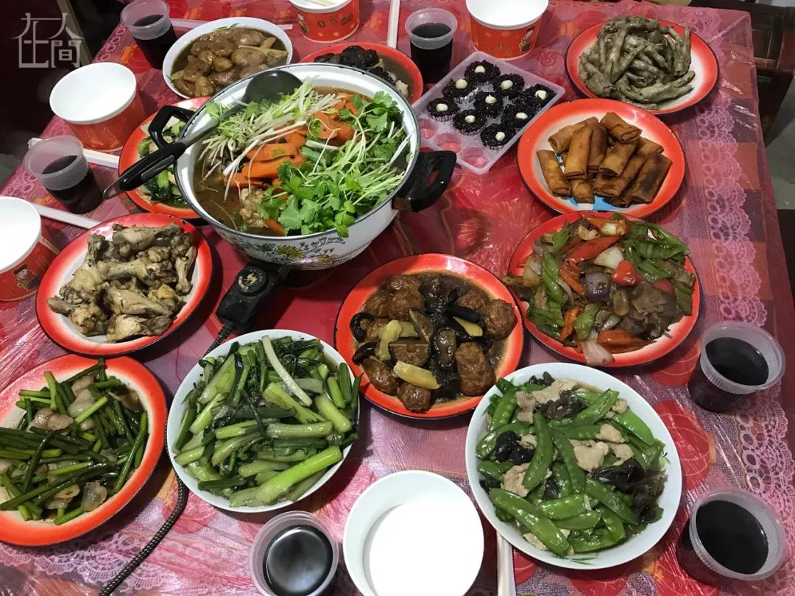
@磊磊：
一个月之前，我的孩子出生。我老婆和孩子一直住在武汉一家月子中心。月子中心采用封闭管理，十多个宝妈都在里面吃住，有专门的护理人员和服务人员。中心对访客限制比较严格，疫情比较紧张后，基本就把大门锁起来，控制出入了。后来，很多护士，清洁人员都休假回家了，中心里人手就有些不够。
整个城市的紧张感在不断蔓延，很多人都在封城之前选择回老家。这几天武汉周边城市确诊病例上报逐渐多起来。23号凌晨，武汉宣布封城，当日下午，我们离开月子中心，开车回到武汉郊区的老家。高速封锁了，但普通道路还通畅，路上没有巡查。
我爸弄的年饭，准备了十几个菜。因为疫情关系，今年团年饭只有家里人一起吃。几个叔叔都没回来。八十岁的奶奶也没有接回来过年。家里人对疫情比较关心，担心我们回不了家。但他们的防护措施并不够。农村现在人很少，往来串门的都没有戴口罩。家里人没有感染的，家乡附近也没有听说有感染病例。但是我们自己还是比较谨慎，宝宝太小，回来后就抱到楼上，基本不下楼来。有亲戚过来探视，也尽量避免接触。另外，我们这边正月里一般要拜年，但今年鉴于疫情，我爸说就电话拜年算了，不出去了。周边亲戚朋友大多也是这个态度，看来大多数人还是抱有比较谨慎的意识。作为一个高校教师，我的态度是：谨慎应对，加强防护，耐心等待。

 @暖喆：
@暖喆：
今天除夕，武汉依然在下雨。往窗外看，好像整个武汉都湿透了，冷透了。本该是热热闹闹的日子，武汉却陷入一片死寂中。谁也没料到，新型肺炎会如此可怕。
封城那天凌晨三点，突然在梦中惊醒。打开手机，发现武汉要封城了。一股燥热顿时升起，心慌不能自己。辗转反侧，怎么也睡不着。打开朋友圈，发现一位朋友发出来逃离武汉的视频，十分开心。我要走吗，父母会跟我走吗，走了后又该怎么办。思绪乱如麻，疲倦也再次袭来，很快又入睡了。
当再次惊醒，已经是早上6点40。心里的慌乱像碰上了催化剂，剧烈膨胀。天生的危机感让我失去了冷静，赶紧喊父亲去超市买东西。我知道，当武汉人一觉醒来，发现自己被封住的时候，慌乱与疯狂将占据他们的内心，食物、水以及其他生活用品必然会被疯抢。
封城之后，各种消息满天飞。我把自己关在房子里，看着各种各样的资讯，心里乱成一团。有说高速还没封，可以逃出去的。有说物价飙升，一颗大白菜卖到七八十。有些看起来难以相信的消息，在这一刻似乎都有很大的可能。消息被放大，人心也被放大了。
想过逃离武汉吗？
我还真的想过。看到高速还能走的消息，我真地心动过。可是我找不到车，也不知道往哪里逃比较好。我也想过逃回老家，可是我们那个小县城，离武汉不过两个多小时的车程，人员流动十分大。更何况，他们很多人都没有意识到这次灾难的可怕，街上普遍都没有戴口罩，各种酒席吃喝更是络绎不绝。我觉得，这不比武汉安全。
这个想法破灭后，我老老实实地把自己关在家里。像刻板行为一样，无聊无意义地刷着手机。
到了除夕这天，平平淡淡的，让人感觉不到它有什么特别的。父母一早开始忙着做饭。虽然家里只有三个人，他们还是想做很多菜。他们的心态比我好，对待肺炎的态度也比我漠然很多，或许没有把这个当多大的事情，尽管我已经无数次跟他们强调了。母亲在厨房做菜，父亲帮忙，我像个多余的，脑子里只想着各种肺炎讯息。
我们家其实在还没封城之前，就已经囤了几天的菜。除夕这天，母亲做了不少菜。鸡鸭鱼肉，都是过年的常见菜。而我却总在担心，如果武汉长期封城，食物该怎么办。总的来说，除夕这天，父母是很开心的。他们乐此不疲地在群里抢着红包，在微信上跟人欢乐地聊天，好像在另一个世界里。
而我却像被封住的人。在武汉封城的时候，我也把自己封住了。
我总是在担心在思考：食物不够了怎么办？我们得肺炎了怎么办？没有车怎么去医院？什么时候能解封…..
我的脑子里总被这些问题困扰着，找不到答案，也看不到希望。压抑，迷茫，痛苦，恐慌。

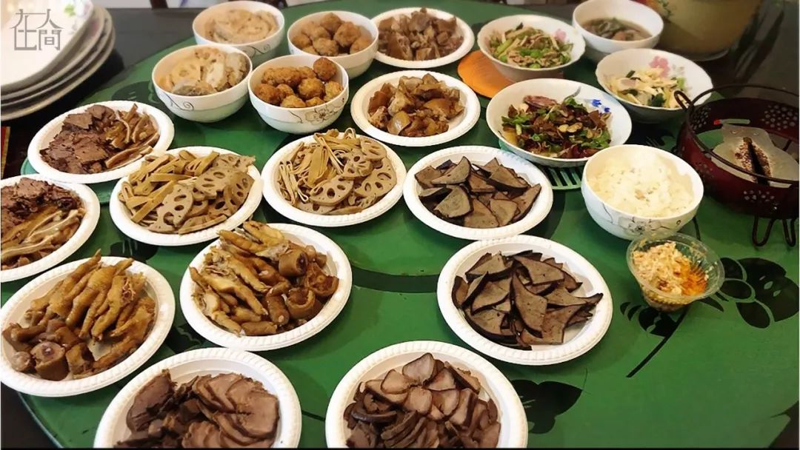
@力力：
在孝感，外婆家的年夜饭，分别是卤味拼盘、炸春卷、鱼面、火锅、蒸菜和新鲜蔬菜。外婆早早就开始准备，还写了年饭菜谱。每年年饭除了外婆、舅舅们，还有姨婆姨爹姑婆一家都会过来。今年大家进门的时候都戴了口罩，进门第一件事就是洗手。以前饭桌上都会聊聊大家今年的发展如何，过得怎么样。然而今年的话题是肺炎，加上电视机里一直在播放肺炎新闻，感觉今年的年缺少了很多年味。明显能看得出大家心里的担心。
今年家里增添了新的小成员，家人就更加担心了，进门的玄关处放满了口罩，外婆还一直在说：“药店的口罩都不好买啦，还得抢着买，这一袋N95都要80一包了，可不买又没有办法。”街上行走的人很少，都佩戴了口罩，路上的车也很少。以前过年都堵车，现在外面都看不见什么人。加上又是雨天，湿冷的感觉让人更难受了。真想回家的路还是多么堵，吃着年夜饭，吐槽春晚，集着福，没有肺炎。大家平平静静地过着年。
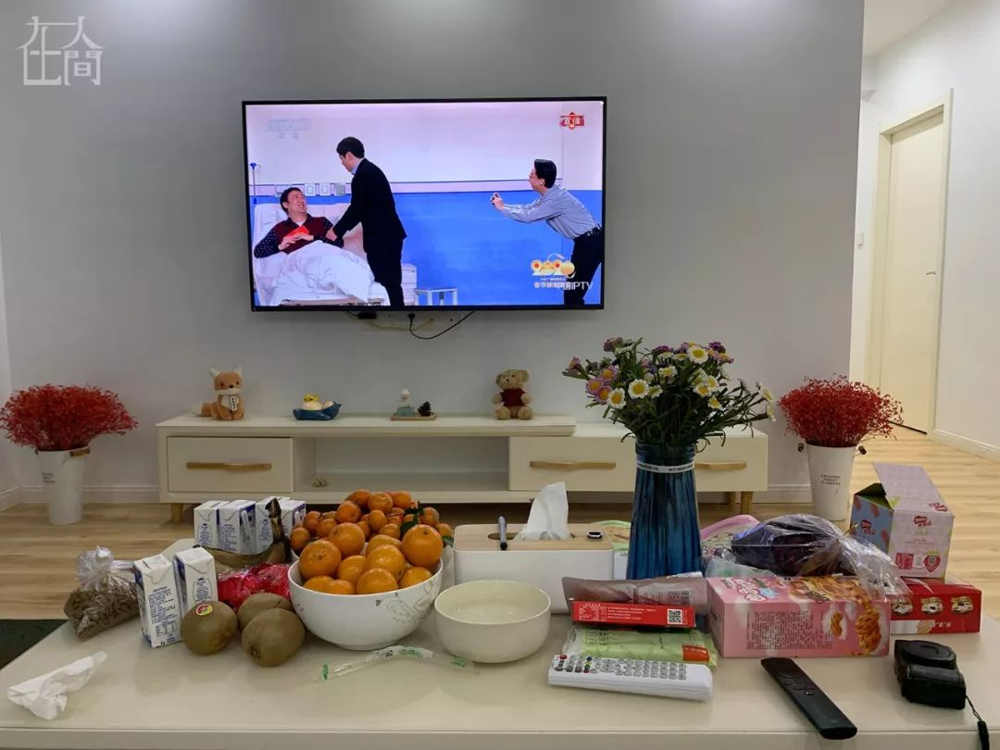
@杨达：
武汉封城的第二天，也是大年三十。我1月12日回的武汉。两天前家里人才开始全面警惕这次肺炎疫情，基本上年轻人都开始意识到事态的严重，但家中长辈依然没有太重视。我花了近两天的时间终于说服家人要出门就戴口罩，勤洗手，一定注意安全。
今天大年三十，我们没有外出，中午在家和爸妈一起吃了便饭，下午把妈妈和狗狗接到我家来，晚上一起看春晚，桌上的这些零食和水果是封城之前为了过年而买的，全都拿了出来，就当作是今天的年夜饭了。爸爸明天还要去公司上班，希望一切都安好，希望身边所有的朋友也都能度过这次难关，辛苦所有奋斗在一线的医护人员。
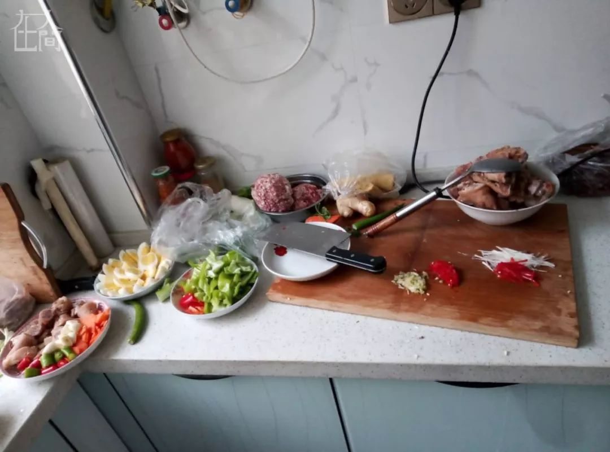

@金宝：
我家住武汉市江夏区，年夜饭是一家六口人，包括我们夫妻，两个孩子和我父母，外加同一小区的老两口，一起吃的。
23号早晨刚睡醒，手机上铺天盖地都是武汉封城的消息。我们心态还好，没有太恐慌，比较淡定，但封城之后还是有点儿紧张。没封城之前，感觉这个病离我们比较远，昨天一封城，多少还是有一点点紧张。
我没想过离开。我老家在内蒙，这个时候回内蒙我不认为是明智之举；我岳父母家在湖北荆州农村，医疗、交通各方面条件都不行，留在武汉对我们来说是最适合的。我们每年大年初二都会去荆州岳父母家，但今年我们决定不去了。这两天跟他们打了很多电话，岳父母感觉疫情离他们很遥远，该打牌打牌，据说口罩也没戴，多少有些大意。
我们买了醋，84消毒液，每天开窗户通风，两个孩子也特别注意，都按照网上说的方法洗手。口罩，我买了三四天。口罩都涨价了，供不应求，我姐在网上给我订了货，但网上说不往武汉发货了，没办法，我继续开车去药店买，最后买了一些N95。
23号当天下午我开车去超市，武商量贩，那里一棵菜都没了，我看别人的购物车里，一棵白菜30多块钱，我在这里买了些其他生活用品，排队结账花了40分钟。我去对面另一个超市买菜，称重排队30多分钟。 两个超市里，大家都主动戴着口罩，我只见到一个人没有戴。开车出去，路上仅有七八个人，大多戴口罩聊天。
武汉当日封城，10点以后全市公交停运，但我开车回来的路上，仍然看到有两三个人在公交站等车。

@张先潘：
我家在武汉市江夏区纸坊街道，紧挨着光谷开发区，前几天小区附近传出几例感染病例，大家都很紧张。年夜饭是分开吃的。老妈在二伯家，我在岳母家（在同一个镇，距离五公里）。虽然外面风浪很大，农村还算平静，过年的气氛还是差不多，只是空气中有一种别样的宁静。
年饭是大舅哥烧的，十几个菜，有武昌鱼、牛肉、虾、排骨、藕夹、红烧豆腐、凉拌牛肉、猪耳、西蓝花、玉米炒青豆、春卷、橘子甜汤。大家边吃饭边聊疫情，聊家常，工作和生活，气氛还算热烈。只是封城这件事对家人来说的确是太大的事，心理冲击还是有一些，大家都没见过这个阵仗，原本知道疫情有点严重，但没想到会有这么大的动作。聊了些朋友圈的听闻，到处高速公路被封锁、警察设卡检查等等，这个年饭，疫情占据了不少的话题空间。
2019年父亲去世，按照老家风俗大年初一亲友们都要来拜香，有五六桌客人，要在老家村里操办。这对于我们家庭来说是一件大事，所以年前几天姐姐、哥哥都从深圳赶回来，我也带全家从青岛回了武汉。
23号封城消息来得很突然，半夜姐姐和哥哥给我打电话要我赶紧离开武汉。他们都买了返回深圳的高铁票，建议我也离开。当时就很纠结，脑袋一片空白，后来想想，姐姐和哥哥都走了，老妈一个人在家里也不安全，那我就留下来陪老人家过年。我也理解哥哥和姐姐的决定，姐姐带了两个小孩回武汉，她担心孩子，也担心留在武汉太久年后公司开业怎么经营的问题。哥哥一个人回的武汉，他担心封城太久回不了深圳，嫂嫂一个人带两个孩子照顾不过来。最后我们商量拜香的事可以取消，但是村里还是会有人来，所以我还是留下简单接待下。哥哥和姐姐回深圳之后都主动向当地进行了报备，主动居家隔离。
现在心情还是很复杂，虽然也经历过非典，但是也没这么大的阵仗。因为在县城小区附近出现几个感染病例，我们也不敢轻易回城里。哥哥姐姐也一再建议我们就在村里过年。家里刚好也有要办五六桌酒席备下的物资，去镇上买吃的东西也很方便。只是我们备的防疫情的物资还是有点薄弱，只有一些口罩，以及哥哥从深圳带回来的抗感冒、增强抵抗力的鱼腥草、板蓝根、金银花颗粒、罗汉果等等。现在城区要买口罩和酒精、消毒水等物资还是困难，基本都卖断货了。
老妈心情还算平静，但是这一辈子也没见过这么大的阵仗，多少有些冲击。她心里还是惦记初一拜香的事要操办，我们兄妹几个看得很开，这是特殊时期特殊事件，大家的健康安全是第一位的，这些陈规就不用太在意了。拜年的事亲戚们都说好了，不必上门拜访了，微信电话拜年，一家在亲友群下一天红包雨。
农村一片安宁，串门也减少了，娱乐活动更多就是依靠手机。每天翻看信息，也在学习防护知识，两个小孩和老人也要照顾好。只是担心农村不要有爆发疫情。爆发疫情的话，我们可能更危险，没有公共交通了，医疗条件也差一些，没车进城看病都是个问题。至于工作的事现在完全考虑不了，既来之则安之，大家都不知道会封闭多久，只能等候政府安排，希望疫情尽快好转。
在孝感城市，外婆家的年夜饭。分别是卤味拼盘，炸春卷，鱼面，火锅，蒸菜，新鲜蔬菜。外婆早早就开始准备，还写了年饭菜谱。每年年饭除了外婆舅舅们还有姨婆姨爹姑婆一家都会过来。今年大家进门的时候都戴了口罩，进门第一件事就是洗手。以前饭桌上都会聊聊大家今年的发展如何，过的怎么样。然而今年的话题是肺炎，加上电视机里一直在播放的肺炎新闻，感觉今年的年缺少了很多年味。明显能看得出大家心里的担心。今年家里增添了新的小成员，家人就更加担心了，进门的玄关处放满了口罩，外婆还一直在说：“药店的口罩都不好买啦，还得抢着买，这一袋N95都要80一包了，可这不买又没有办法。”
街道的话基本都关门了，街上行走的人很少，都佩戴了口罩，路上的车也很少。以前过年都堵车，现在在外都看不见什么人。加上又是雨天，湿冷的感觉让人更难受了。真想回家的路还是多么堵，吃着年夜饭，吐槽春晚，集着福，没有肺炎。大家平平静静的过着年。
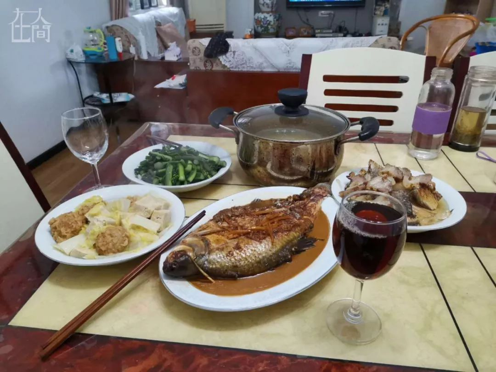
@Olivia：
我因为很早就回了婆家，留下了爸妈两个人留在武汉。两个老人今天错峰去超市买青菜，菜价有些许上浮，不过超市的人说本来三十这天菜也会贵些。超市没有什么人，售货员也戴着口罩还比较放心。家里很早就取消了聚会，老两口就自己在家准备了一顿丰盛的年饭，还发给我们看。


@凹眼：
我在武汉江岸区，与父母一起，三人在家过年。大家庭传统的年夜饭聚餐，早因肺炎疫情通报而取消。
大年夜，我又成了小时候那个端着碗等着大人们把香喷喷的食物铺满餐桌的小孩，老爸负责掌勺烹饪年饭，老妈切好卤菜、煮好饺子。一家人围桌而坐，互道新年快乐，为彼此打气加油。我拍下眼前三人一起用筷子夹起圆子的场景，祈求未来一年，全家人能继续团团圆圆，平安顺遂。
我从头到尾就没有想过要离开武汉，这座我从小生活的城市病了，需要我们一起携起手来守护她。武汉的信念与精神，从不来自某句空洞的口号，而是源于每个生活于此的个体，我们奋进，武汉便奋进。亲朋好友中无人感染，大家庭的微信群内谣言与事实齐飞，恐慌与温情并存，每个人都盼望着这一切能早点结束。
武汉的各类物资是否充足，相信大家在网上各类呼吁捐资的信息中已明了于胸——之前是谁在说谎。就我个人看来，小区菜场供应还算丰富，但菜价高出平时50%以上，有的甚至翻倍，附近药店，口罩，酒精，体温计等防护用品，及所谓针对性中成药、西药皆已断货。继24日10时武汉全市公共交通停运后，25日12时网约车也停运了，出租车坐地起价不打表的现象屡有发生。
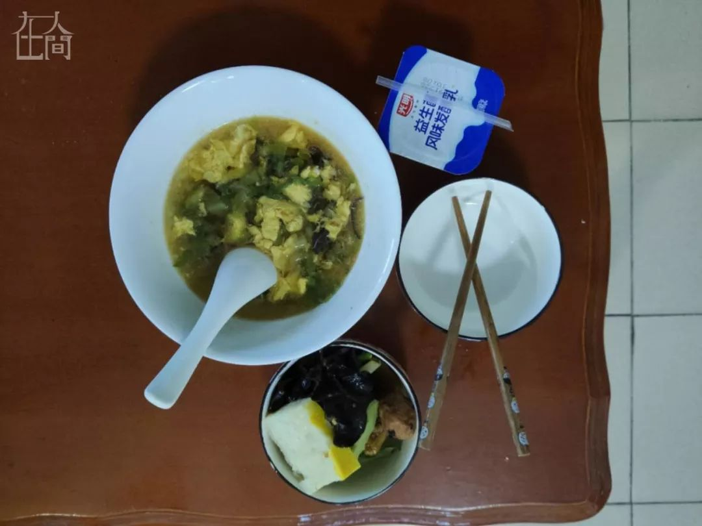
■ 最凄惨的年饭
@杨尚杰：
我现在在宜昌，不在武汉，不过也是疫区。我从武汉回家前发热，就去医院做了检测，是细菌感染。我之前感觉症状很轻微，没有发烧、咳嗽，只是感觉有点胸痛。武汉检查完让吃消炎药，吃了后不发热了但是却有了乏力的症状……
现在父母在外面看春晚，我在房间。我目前高度怀疑在医院被交叉感染了，所以没出门。
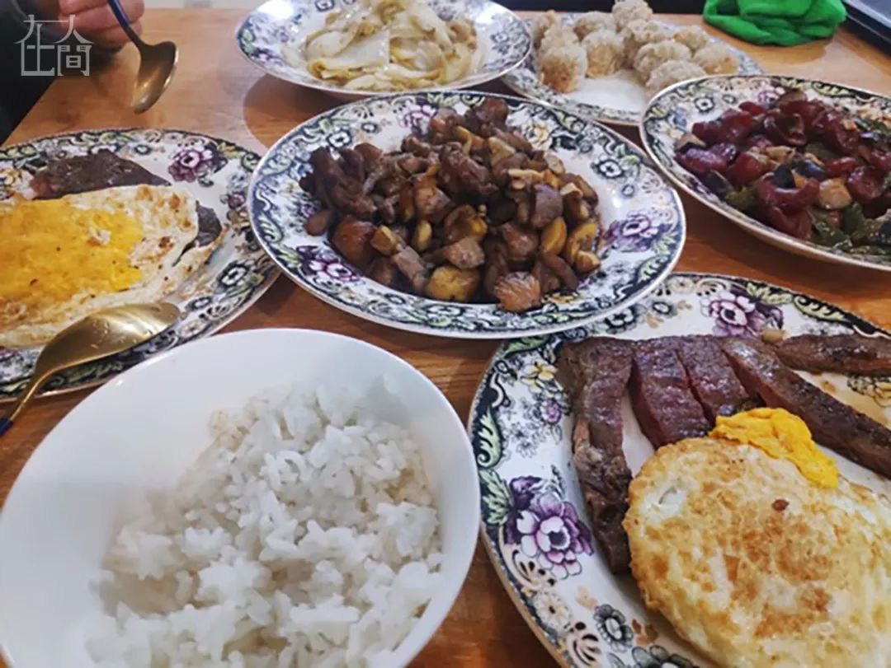
@骁：
我住在武昌徐东，父母住在武汉郊区，今晚和女朋友一起吃饭，不打算串门拜年。封城当天，超市几乎被买空，现在已物资充足。现在家中尚未有人感染，父母较为克制，亲友也取消了拜年活动。大家心态比较放松，因为紧张是没有用的。
除夕的年夜饭，几个肉菜，品相不是很好看。其实，到了吃饭的时候，才意识到这餐是“年夜饭”。最近的武汉，人的情绪多少会有些紧张，白天忙于工作，忙于为疫情出份力，夜里睡眠也不好，多梦。但生活依旧得继续，努力渡过难关，等待春天的到来！

@刘哥：
我现在武汉江夏藏龙岛，今晚是我们两兄弟一起过的，原本希望能够留在武汉送外卖，过年能多挣点钱（再就是33岁的大龄单身汉，想要逃避被催婚），于是就选择留在了武汉继续工作，结果遇到了武汉肺炎……
大年三十，中百仓储超市，还在营业，物质供应基本有保障，只是蔬菜偏少，价格也还能接受；购置年货总共花了不到300：购买了糖果零食、水果饮料、油盐酱醋等。
我们已经提前买了几件水果，零食和饮料，给爸妈寄回去了，老妈非常高兴，发了两次微信视频给我们看。但今年我们两兄弟不回（宜昌老家）家过年，爸妈在老家的年夜饭也就没有任何准备，爸妈说“一点意思都没有”，他们准备正月初一初二就要开始干活了。
我的2020年任务非常繁重：希望通过更加努力的劳动（送外卖），凑齐在宜昌市买房子的首付。
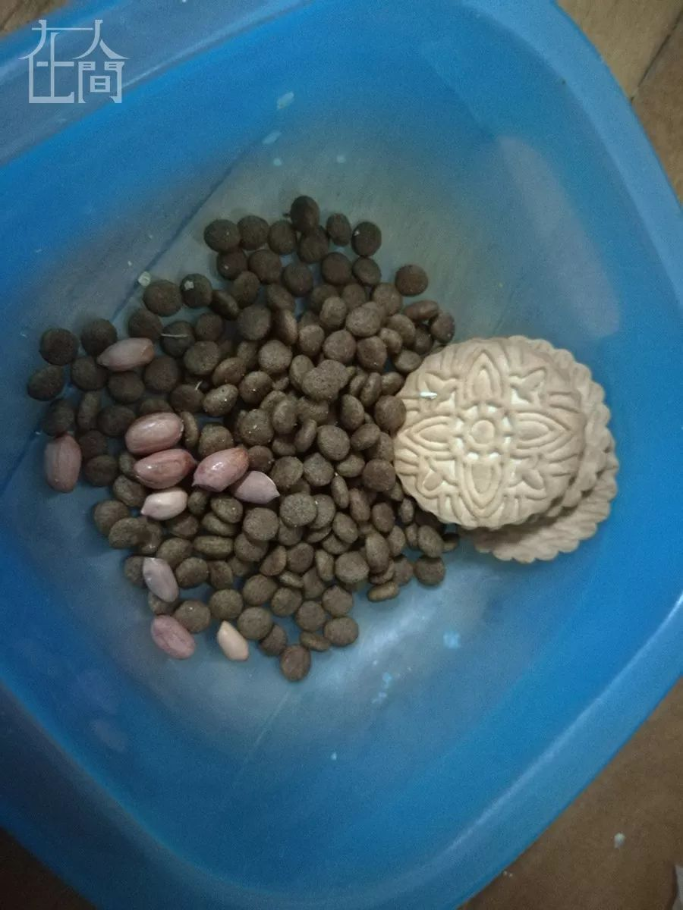
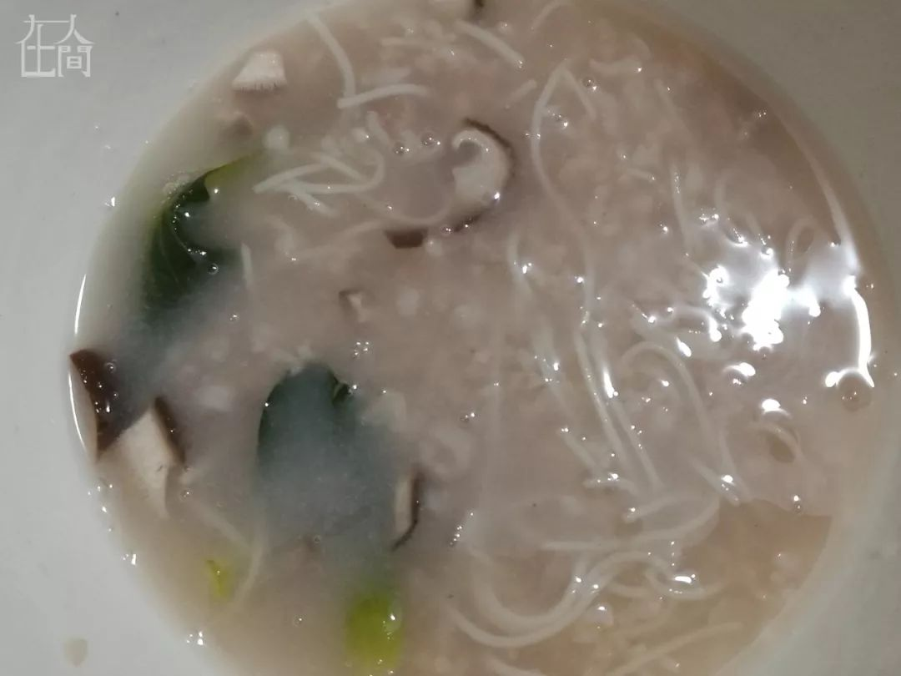
@文婷：
我住在武汉市武昌区离小东门不远的地方，跟我表哥的狗一起跨年，表哥在18号回老家奔丧，留下我和狗在家，现在看情况他们都回不了，我跟狗会相处很久。年夜饭很简单，狗吃的狗粮，加上一份掺了面条和菜的米粥；我吃的也是这个米粥。
今晚，我的家人有在老家的——我二弟一家人、大弟媳和孩子，他们昨天接近中午开着面包车赶回孝昌的；有在武汉的——我爸我妈和一个弟弟，他们昨天还责怪我过于焦虑，我弟甚至讥讽我说“只有你有小道消息，别人就不知道”，今天他们三个终于关了店门；我姐大概回自己在武汉的家了；我，则在表哥家和狗共处一屋。
我是昨天外出采购的。昨天早上醒来，第一个消息就是武汉封城了，我浏览并发了些相关信息到微信群、朋友圈，就出门买食物了，没想到出去发现：大清早就有人出门抢购食物，这种盛况我没见着，据说六点多就有人出来了。
22号起我出门走路，会离人远远的。
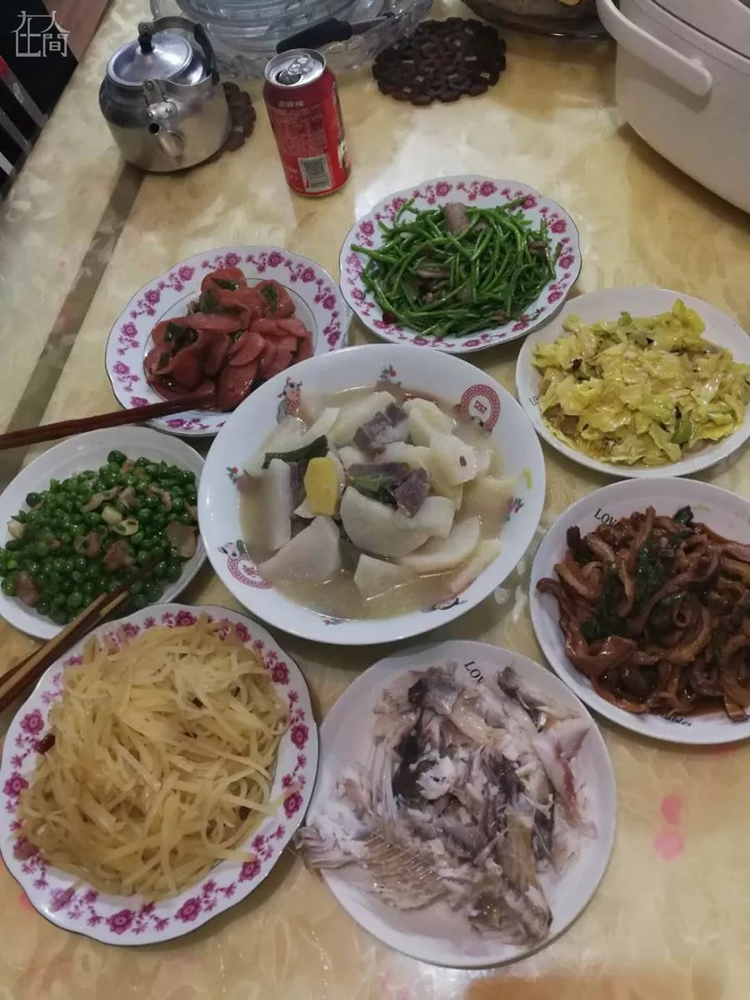
@千帆尽：
往年都是十几口人热热闹闹地一起吃团年饭，今年人少了许多，菜也少了许多。期待疫情过后，春暖花开的时候，我们一大家人再聚。
我在武汉，江汉区，离华南海鲜市场直线距离不过两公里。我们一家三口本来要回我婆婆家一起欢度春节，因为封城，不想给别人添堵，干脆就在武汉过年算了。年饭我和先生一手打造，有腊牛肉炖萝卜，儿子爱吃的腊肉炒藜蒿、酸辣土豆丝、手撕包菜，当然，自然少不了鱼，年年有鱼嘛。
边吃边聊，话题自然离不开肺炎。我们认识的人中，还没有感染的，只是有不少同学是医生，心里老是为她们担忧。儿子买了个120的kn95，像防毒面具一样的口罩，出门口罩护目镜一次性橡胶手套装备得严严实实，进门还是不爱洗手，只是用酒精棉球把口罩护目镜里里外外仔仔细细擦拭得干干净净。我妈老老实实呆在家，麻将也不打了，大门不出二门不迈。
昨天去菜市场买菜，啥都有，也不是很贵，跟每年腊月二十九的菜价都差不多，家里儿子要喝的矿泉水没了，今天去超市买，万达百货闭门谢客，超市还是开门迎宾，只是在进口处，有专人负责对每一个进超市的人量体温。货架上满满当当，年货玲琅满目，就是人很少，付款的时候都不用怎么排队了。马路上人车稀少，竟然还看到了摩的司机在正常营业。
药店人来人往，大家还是忙着买口罩，买一些抗病毒的药。酒精和所有消毒水全部缺货，一次性口罩也脱销，只有kn95的口罩，卖到了20一个。肺炎消息刚出来的时候，我根本没当一回事，直到我的医生朋友跟我说，有医护人员感染了，我瞬间觉得事态严重了，有医护人员感染，就意味着会人传人了，就麻烦了。
不过，震惊担忧过后，就是坦然。就像是天天宅在家不出门蛮好，一旦强制命令你不许出门，就浑身不自在了。其实封城，我们普通老百姓别的都不担忧，只担心封城以后物质需求供应不上，没被肺炎害死，反而被活活饿死就太亏了。

@长翅膀的小小熊：
作为一个刚好在封城前回到武汉的外地人，本来定了封城那天晚上七点的机票离开武汉，然后当日早上一起来发现封城了，就被留下来了。其实我还是非常坦然，因为我觉得都是命嘛，遇到了就只有顺其自然。
今天晚上收到很多家人朋友的关心！然后陪我讲话聊天，不断关心我，真的很谢谢你们。今年可能大家都看我可怜，好多家人朋友还单独给我发了大红包，看来也是在灾区的一种幸福嘛…… 哈哈哈（苦中作乐 jpg.)
给大家欣赏一下我的年夜饭，其实最近也不能算是吃一顿一顿的饭了，照片只是我刚好在6点附近吃的东西。最近的日子就是饿了就去吃点。因为家里没有囤什么蔬菜水果，之前买了很难吃的蔬菜粉，可能最近我每天要时不时吃一袋了…… 哈哈。
发现自己好能喝水……除了这些饮料还喝了很多纯净水。今天心一横还花钱买了燕窝。人总是还是担心点未来的嘛。

@文白：
2019年农历的最后一天，冬笋烧鸡、青菜炒香肠、青椒顺风和鸭肠、大骨头汤……虽然都很好吃，但是我在武汉却开心不起来。武汉，一座敢为人先、每天不一样的城市，一座充满着活力和朝气的城市，却因一场疫情千疮百孔。
12月29确定疫情，随后停运公共交通、封城、关闭过江隧道，才短短25天……在科技发展的时代，我在反思是不是我们走得太快了？从物质贫瘠的时代到解决温饱问题，再到现在物质充足追求吃得好、穿得好，甚至不惜风险尝鲜野味……作为一个不是武汉人，但身在武汉、热爱武汉这片土地的新武汉人，我呼吁大家不要尝鲜野味，在外注意防护。
另外想和大家说，武汉为了全国真的牺牲很多，请大家不要把矛头对准武汉人，这个春节我们缺什么都可以，但是我们不想缺少爱！虽然我们的城市病了，我们会尽力治好他，疫情结束武汉欢迎你！祝大家、医护人员和为武汉奉献的朋友们，新春快乐！武汉，我们一起加油！

@溪：
今年因为疫情，家里的年夜饭只有6个人，但公婆还是做了一大桌子菜。
湖北是鱼米之乡，年夜饭的桌上少不了“水产品”，也少不了湖里的美味。排骨藕汤、藕夹、松子桂鱼、烧鸭、腊肉炒泥蒿都是武汉人的最爱。
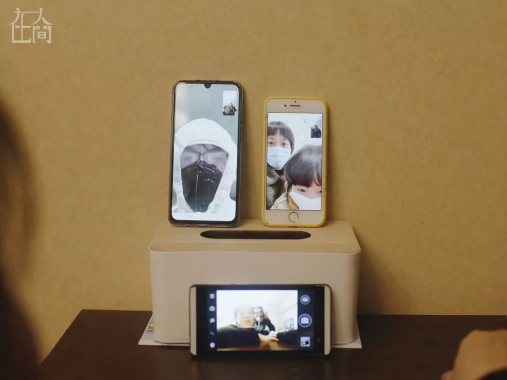
@刘小光：
去年的时候应该早就拿着手机在各群里抢着红包，赶赴团圆年饭的路上，而今年每家紧闭，翻看手机全是各种扑面而来的疾病信息，外边依稀听到救护车的声音更让人感到一丝悲凉。而我们家也是各守一方，女儿和老婆回老家避病，我和母亲在家不敢出去，父亲化作“战士”在为武汉拼命，这也算是一张非常时期的家庭合影。

■ 忘了拍了，只有拿这个凑数
@橙子：
今年的年三十依旧和家人一起度过，但是感觉冷清了不少。年夜饭出自妈妈的好手艺，热热的羊汤火锅，各种家常菜，一家人能围在一起看春晚，我很满足了。看看战斗在一线的医生护士们不能和家人团聚，跟她们相比，我们守在家，不出门又算什么？再看看电视里春晚万家同庆，而群里都是素不相识的人自发捐款捐物甚至免费提供房子的热心举动，我只能说世界上虽然没有感同身受，但有抱团取暖，众志成城，我们都在武汉，我们是普通的武汉人，我们在一起。

@四圈：
作为在北京工作的武汉人，原本在除夕上午，我应该从北京西出发，踏上返回武汉的高铁，再从汉口站下车，和许久未团圆的家人见面。然而汉口站，如今已成为距离疫情发源地华南海鲜市场800米，昨天已被封锁的危险地点。
这已经不是我不在武汉度过的第一个春节，去年我在美国读研，春节那天上课考试。三天以前，我又主动退票，接受了今年要继续不在武汉过年的事实，做一个回国后还没回过家，也不知道什么时候可以回家的武汉人。
幸运的是，在北京的室友也是武汉人。同事问我，一个人在北京过年打算干什么的时候，我回答室友也在。当别人再问室友怎么不回家的时候，我说室友也是武汉人。同事便不再追问，一切不言而喻。
昨天是武汉封城第一天，下午在同学群里看到了贴着“武汉加油”的大巴从机场高速驶进市区，才真实的意识到，我的城市现在已经是一座孤立无援在向外求助的孤岛。而这座孤岛里，有我20多年里的所有家人，和绝大部分朋友。这段时间在网上看到了太多对武汉人的谩骂，比起去用力的解释，我们只希望在武汉的亲人朋友能平安健康，没有什么能更重要。
晚上还是和室友一起在北京做了年饭，无论如何，这都是我们在北京工作以后的第一个春节。本来今天是团聚的日子，悲壮不值得迷恋，灾难也不值得歌颂，那些自愿奔赴前线的人可能也曾只想除夕在家吃一顿普通的团圆饭而已。
给医护人员加油，给在蔡甸连夜修建医院的建筑工人和设计师加油，为所有奋战在岗位的人祈祷。新的一年已经来到，山鸣谷应，终有回响，都会过去。如果说春节的短暂分离是为了更好的重逢，下一个春天，武汉的樱花还会开，梧桐还会飘絮，那时候我们再见面。
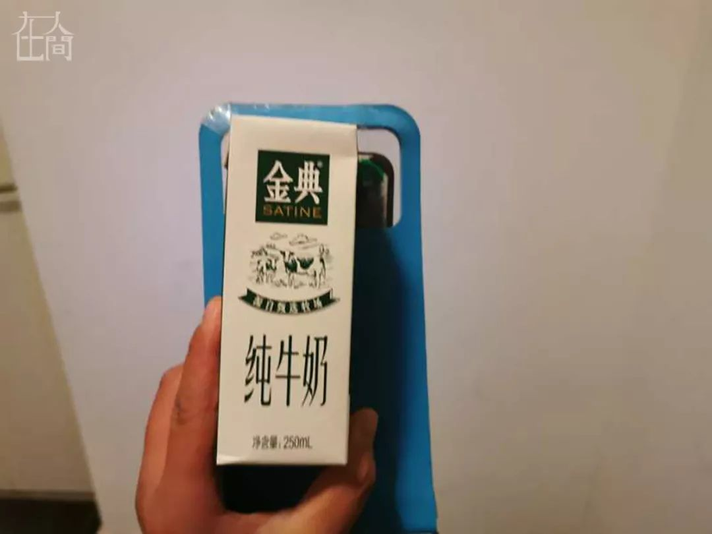
@山木：
我今天一直跑单，还没有吃晚饭。武汉晚上下雨，我送货身上淋湿了，但我戴着头盔，头没着凉。我从10点过在一个酒店大堂里躲雨，这里面有Wifi，有暖气，我就一直用这里的网，和亲戚朋友们聊天、视频，聊武汉的情况……到现在，快1点半了，我也没有胃口吃饭了。
我中午吃了一餐的，中午送一单外卖的时候，顾客送了我一瓶牛奶，我喝了到现在也没有感觉太饿。
我就是感觉现在这个信息科技发达到这种地步，为什么这么多医务人员、这些物资啊什么的……我今天看了真的是很揪心。因为这些医生他们现在吃饭都成问题，外卖不让送到医院，好像他们的后勤保障也没有，他们过得这么艰难。今天晚上手机上整个覆盖的信息全是医院的医生，看着真的是很恐怖。


@苗苗爸
我在武汉市武昌区中南路街道，和妻子女儿一起过年，年饭是我做的，五菜一汤，给妻子和女儿一人封了一个红包，聊天内容没啥特别的，就跟平常一样。
我们原本计划春节去深圳广州玩，机票也早早订好了，1月23号下午从武汉飞深圳，2月2号晚上从广州飞武汉。22号晚上睡前我还在和妻子讨论行程攻略及要去的景点，23号早上起来发现市政府凌晨两点已经发布公告，天河机场离港通道关闭，然后就留在武昌过年了。
23号行程取消之后，上午我一个人出门去采购蔬菜、口罩、酒精等物资。当时发现很多临街门面已经关门歇业，先跑了好几家药店，都无口罩和医用酒精销售，果断就放弃了。然后去了平时经常买菜的小东门综合市场（就是财新报道里那个香港专家管轶去看过的菜市场），市场里很多人，而且发现菜价上涨不少，我去得可能比较晚，绿色叶子蔬菜几乎没有了，也没时间慢慢挑选，基本上把能看见的菜各买了一些，直到两只手拎满为止。当时买菜快结束的时候，我看见市场工作人员在劝离商户和顾客，说要关闭市场消毒，我问他们市场什么时候能再开，被告知要等政府通知，但明确告诉我初七初八肯定是开不了。
当时在街上奔波的时候发现路面车很少，公交车已经停驶，有人在路边打车，说等了30多分钟没坐上出租车。
从23号上午买菜之后就一直没出门，想着这些菜也撑不过一星期，也不确定小东门市场什么时候再开，后来通过手机APP在网上又订了一些蔬菜和生活必需品，预计25号26号送上门。
我有一个同事的老公疑似感染在住院，但不知为何，医院一直迟迟没有给他确诊，但隔离治疗方案和用药都是跟已确诊病人一样的。今天年三十晚上问候了她一下，她说把小孩已经早早送回老家，自己一个人留守武汉陪护老公，治疗费用这一块听她说只是入院的时候让交了800元押金，后面医院就没再让她交费，另外自己自费买了1万元多的免疫球蛋白注射剂给老公增强免疫力，这笔费用后期不知道该怎么处理。
另一个同事的妻子是同济医院检验科的B超医生，从疫情爆发以来已经连续上班数天，这几天身体不适感到胸闷，做了ct检查无大碍，退居二线随时待命。他们俩也是早早就把小孩送回老家了，我同事把订的机票也退掉了，陪妻子坚守在武汉，看得出夫妻俩都很疲惫。
我们家女儿只有4岁半，年龄太小，还不太懂发生了什么，只是对于憧憬已久的旅行不能成行和不能坐飞机感到遗憾，但好在孩子还比较好沟通安抚。我父亲平时接送小孩上学放学，1月中旬幼儿园放假后已经回黄陂老家。元旦爆出疫情时，我就网上买了N95口罩，我父亲因为年龄大观念难改的原因一直不愿佩戴口罩，给女儿买的是儿童款的口罩，女儿戴起来还比较开心高兴，可能觉得好玩有趣。我和我妻子平时出门的话也会随身佩戴口罩。23号飞机取消之后，我父亲打电话说让我们带女儿回黄陂老家，我没同意。原因有三：一是农村的卫生环境条件不如城里好，而且观念难改，普遍都如我父亲那样不愿意佩戴口罩；二是黄陂乡下就医条件不好，万一有个咳嗽发烧什么疑似症状的话，不如武昌就诊方便；三是回黄陂乡下的话隔壁左右都是几十年的邻居，乡里乡亲的，即使我不去别人家里，但是别人来我家里的话我也不好拒绝，不如武昌呆着就我们三个人在家的隔绝效果好。
@晓竹：
我是一个孕妇，肚子里的宝宝10周多了。今年没有年夜饭，没有春晚。我的生活就是待在家，饿了吃点儿东西。因为怀孕，我免疫力相对会较低，一旦感染，小生命是绝对保不住的。不出门，忍不住看各种疫情消息，一边担心自己，一边担心疫情下一轮大爆发……
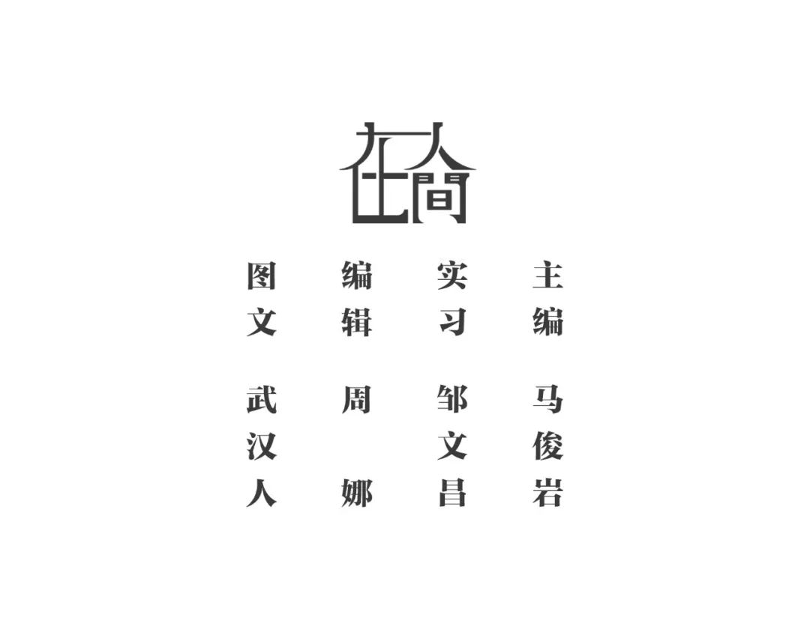


新型冠状病毒疫情，牵动人心，
《在人间》现面向所有广大读者征稿：
这个年
无论你身在武汉，还是别的城市
我们邀请你通过照片和文字
记录你身边正在发生的故事
要求：
照片不少于5张，文字不少于300字
投稿方式：微信联系人间君（zairenjianliving）

原文链接 备份链接 作者 | 王晓 出品 | 棱镜·腾讯小满工作室 欢迎下载腾讯新闻APP，阅读更多优质资讯 对于湖北人民来说，2020年的这个除夕夜太不平常了。 “药店大姐告诉我们，口罩绝不涨价，不发国难财，而且告知我们第二天早7点开 …
原文链接 备份链接 你怀着怎样的心情，度过了2020年的大年夜？ 在得知武汉封城的新闻后，三明治紧急发起了每日书特别版《武汉日常》，邀请人在武汉和家乡在武汉的朋友，一起来用文字忠实记录他们在这个特殊时期的生活日常。 招募一经发出，就有近百 …
原文链接 备份链接 昨天是武汉封城第一天，三明治紧急发起了每日书特别版《武汉日常》，邀请人在武汉和家乡在武汉的朋友，一起来用文字忠实记录他们在这个特殊时期的生活日常。 招募一经发出，就有近百位朋友迅速响应，其中有一路哭着坚持回家过年的北 …
原文链接 备份链接 本文由娱志The Review原创出品 华东师范大学传播学院学生娱评号 转载需申请授权 作者 | Moe，苏博 编辑 | 华实 导语 “自2020年1月23日10时起，全市城市公交、地铁、轮渡、长途客运暂停运营；无特殊 …
原文链接 备份链接 1月23日凌晨，武汉宣布自10时起，全市的航空、铁路、城市公交、地铁、轮渡、长途客运暂停运营，无特殊原因，市民不要离开武汉。新型冠状病毒肺炎，正考验着这座九省通衢的特大城市。 此后24小时，真实故事计划访问了几位选择留 …